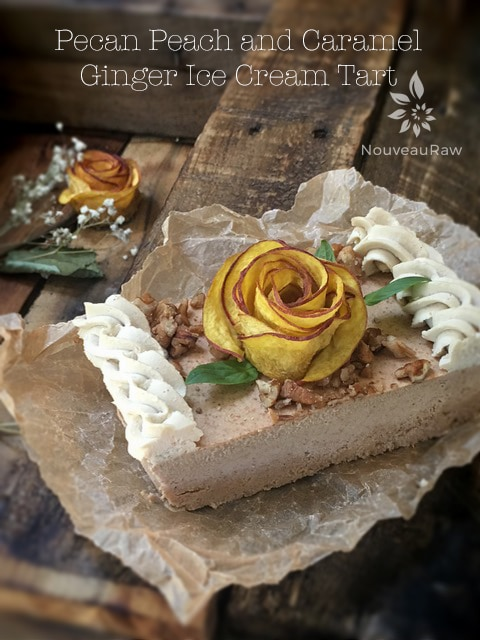
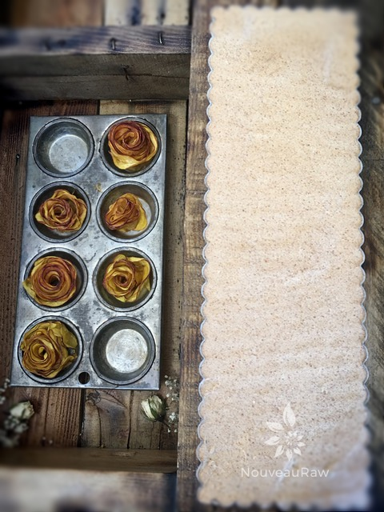
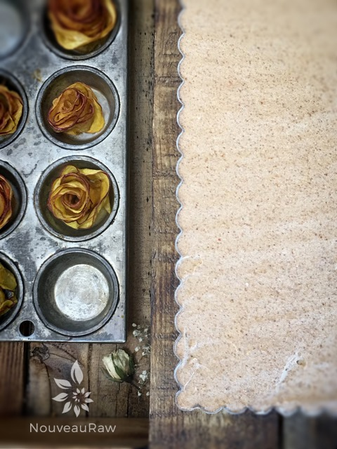
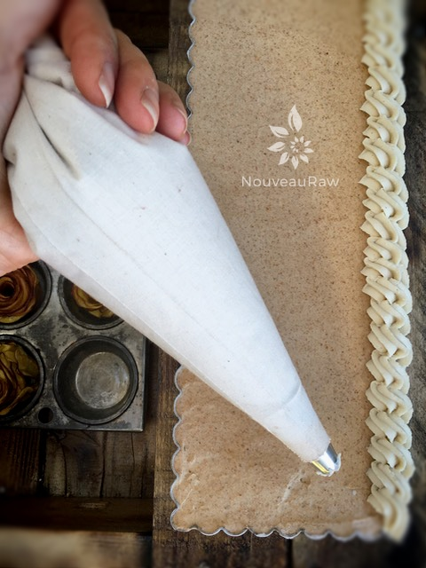
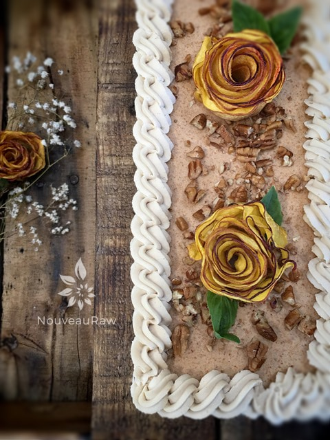
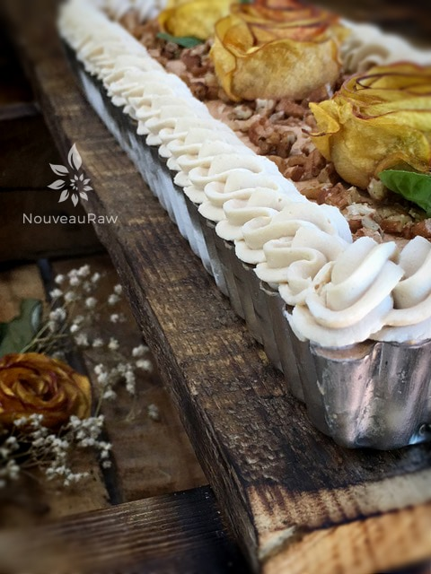
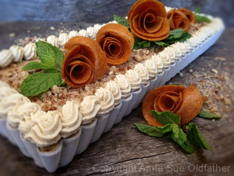

Pecan Peach and Caramel Ginger Ice Cream Tart

~ raw, gluten-free, dairy-free ~
If you saw my recipe for Layered Peach and Caramel Ginger Pie you will understand a little bit about how this recipe was born. But allow me to explain further. And I recommend that you don’t skip over this little story for it might teach you about the beauty of raw foods.
Finally, the peach season had hit. I had been patiently waiting, toe-tapping ready, for our peaches to hit their peak ripeness so I could pick them. I would often go out to check on and sing to them. I will not apologize for being me. :)
One of the first peach recipes that I created this season was the Layered Peach and Caramel Ginger Pies. They turned out absolutely scrumptious but had a short shelf life of about two days. After that, the fresh peaches started to release their juices, and my little pies started to get mushy. They still tasted amazing, but they didn’t stand up under the pressure of the peach flower on top.
We were running out of hours in the day; we just couldn’t consume all of them before they were going to go bad. I need to stop “cooking” as though I was feeding an army. lol
So, in the heat of the busy day, I tossed the peach pies, crust, and all into the blender and blitzed them. I then added some coconut milk that was in the fridge, which needed to be used up too… So, I blended it all until it was nice and creamy. I took a taste test. *blink, blink* I took another taste test. Truth be told, I would have liked to have lifted that blender carafe right up to my lips and allow the luscious peach cream to slide right into my tummy. But I resisted… oh the willpower I possess. :)

My day got really busy all of a sudden, so I placed the blender carafe in the fridge and figured that I would tend to it later. Later came the next day. It was nice and chilled, and I decided that I should taste test it again, you know just in case it went bad *cough*. It had gotten better! Holy-mother-of-all-kitchen-appliances! The flavors melded together beautifully.
Then the light went off or is it on? Either way, I knew what I was going to do with it… ice cream! During the 25 minute process of listening to the hum of the ice cream machine, I started thinking about how I wanted to present it… and there you have it. That is how the Pecan Peach and Caramel Ginger Ice Cream Tart was created!
While the ice cream was in the freezer, firming up, I started brainstorming how I wanted to decorate my new creation. I had some raw white frosting in the fridge, all ready to go in a piping bag, so I decided to use that. As I stood at the island in the kitchen, I found myself staring down at some peach fruit leathers that I had just pulled out of the dehydrator. I wanted to put flowers on my ice cream, but I have yet to teach myself how to make raw frosting flowers, like the fondant ones.
Art comes in MANY forms of mediums.
So, I started cutting circles and playing around with my fruit leather… soon I was forming flowers out of it. The perfect touch for my dessert! I will soon do a tutorial on how to make them, but just by looking, you will most likely figure it out. :) Update: July 13th, 2016 I made this ice cream dessert again but didn’t have fruit leather on hand so made some antique peach roses. I did the same process for these as I did with my Antique Apple Blossoms. If you take a peek at the photo of the single slice… you will see that the peach flowers freeze perfectly. I tested one, so I could report back to you, and it didn’t affect it at all.
By sharing this story with you, I just wanted to show you that when dealing with raw food, we are given the ability to be so creative. How many times have you seen in the cooking world a pie literally transformed into a decadent dessert such as this? I hope this encourages you. The ingredients listed below are the same ingredients used in the Layered Peach and Caramel Ginger Pie recipe. I just broke it down here, so you didn’t have to bounce back and forth. Enjoy!
- 1 cup raw pecans, soaked
- 14 oz thick coconut cream, raw or canned
- 6 medium-large peaches, ripe
- 12 large Medjool dates, pitted
- 1 Tbsp raw honey
- 1/2 tsp ground Ceylon cinnamon
- 1/2 tsp ground ginger
- 1/8 tsp Himalayan pink salt
- 1/2 cup raw crushed pecans, soaked (hand mix)
Preparation:
Ice cream:
- After soaking the pecans, drain and rinse. Add to a high powered blender.
- Add coconut cream, peaches, dates, honey, cinnamon, ginger, and salt. Blend until creamy.
- Due to the volume and the creamy texture that we are going after, it is important to use a high-powered blender. It could be too taxing on a lower-end model.
- Blend until the filling is creamy smooth. You shouldn’t detect any grit. If you do, keep blending.
- This process can take 2-4 minutes, depending on the strength of the blender. Keep your hand cupped around the base of the blender carafe to feel for warmth. If the batter is getting too warm. Stop the machine and let it cool. Then proceed once cooled.
- I left the skin on the peaches, just make sure to take the pits out and toss them.
- Place in the fridge to chill for a minimum of 1 hour. I chilled mine overnight, but it is not required.
- Place the chilled batter into the ice cream machine and follow the manufacturer’s instructions. After the ice cream is done, hand mix in the 1/2 cup pecans.
- I used a rectangular tart pan. I wrapped the base with parchment paper for the ease of removing the frozen dessert from the base. Place the ice cream in the tart pan and level off the top with an off-set spatula or something with a straight edge.
Decorating (optional):
- Make a batch of White Cake Frosting. It will need to chill in the fridge before using so keep that in mind as prep work.
- Fill a piping bag halfway, fitted with a closed star tip. If you fill the bag to full, it could be harder to handle. I did the rope technique for my style of piping. Thank you, Youtube! Pipe around the edges of the pan.
- Dust the top of the tart with crushed pecans. Do this after piping the frosting on. If you do this step first, you will have a challenge with keeping the frosting on the ice cream because the pecans will create a loose base.
- Decorate with flowers (soon I will share how to make the ones in the photo, or use fresh edible flowers, or use whole pecans. Be creative!
- For storage purposes, I ended up cutting it into 2″ slices and put it into freezer-proof containers. Normally I would serve as-is for a dinner party but for two people and for Bob… (haha) I wanted to store this to where he could easily grab a piece and enjoy.
- Storage life is about 2-4 weeks in the freezer before it starts to lose flavor. Make sure that it is well sealed, so it doesn’t absorb freezer odors.
Freezing Suggestions for Ice Cream:
-
-
Freeze in popsicle molds or 3 oz Dixie cups with a popsicle stick inserted.
-
-
Store the ice cream in the very back of the freezer, as far away from the door as possible. Every time you open your freezer door you let in warm air. Keeping ice cream way in the back and storing it beneath other frozen-sold items will help protect it from those steamy incursions.
-
Ice cream is full of fat, and even when frozen, fat has a way of soaking up flavors from the air around it—including those in your freezer. To keep your ice cream from taking on the odors, use a container with a tight-fitting lid. For extra security, place a layer of plastic wrap between your ice cream and the lid.
-
To soften in the refrigerator, transfer ice cream from the freezer to the refrigerator 20-30 minutes before using. Or let it stand at room temperature for 10-15 minutes.
-
Wish to make your own raw ice cream, wonder what machine I might recommend, and more? Click (
here) to check out the Reference Library!

Start by first lining the base of the tart pan with plastic wrap. Then load in the ice cream.

Be sure to level off the ice cream with a long offset spatula. This will create a flat and smooth surface.

Pipe the frosting around the edges. This is optional, but it sure is pretty. Be creative.

Add crushed pecans in the center and place the peach roses on top.

The photo below is the very first one I had made with the fruit leather flowers.
The photo below is the very first one that I had made with the fruit leather flowers. I wanted to keep it here so you could have options.

© AmieSue.com